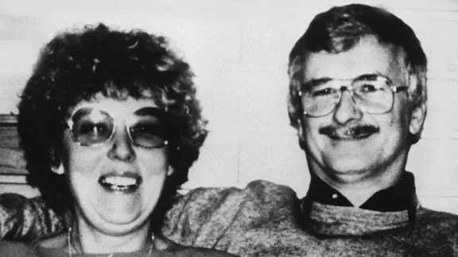
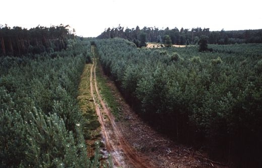
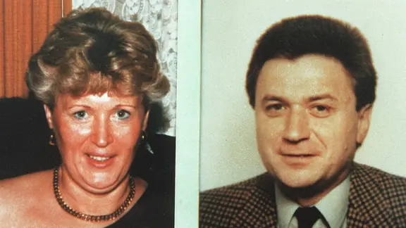
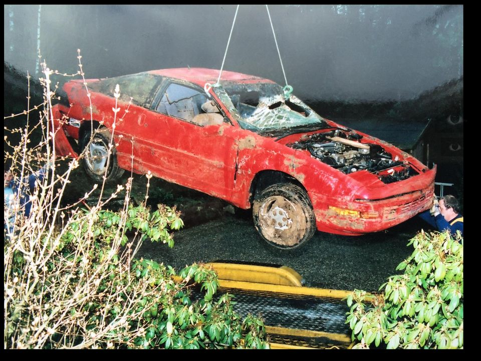
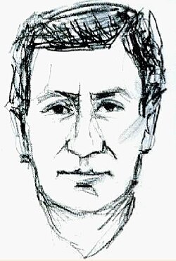

Victims Case #1
Ursula & Peter Reinold
Appeared to go on a hike. Last seen alive on July 12, 1989.
Their bodies were hidden deep within section 150 of the Göhrde state forest.

First Victim Pair Case file
The Göhrde Forest
A massive, isolated state forest. High density of trees, remote hiking trails. Perfect hunting ground for someone with profound geographical knowledge of the area.

Forst-Section 150
Victims Case #2
Ingrid W. & Bernd-Michael K.
Murdered on July 27, 1989. Strikingly, they were killed
on the exact day police discovered and recovered the first couple nearby.

Second Victim Pair Case file
Proximity: 800m Apart
Geographical tracking maps prove the killer targeted the second couple less than a kilometer away from the ongoing active recovery operation of the first victims.
The Modus Operandi
A mix of blunt force trauma, strangulation, and gunshots. The killer used a small-caliber (.22) firearm. Victims were bound using complex, secure knots.
THE COINCIDENCE?
The killer returned to the forest to strike a second time while a massive police search operation was actively deploying less than a kilometer away. Complete lack of fear.
The Victims' Vehicle
The killer stole the victims' cars to escape the forest, driving them to nearby towns. One car was later found completely abandoned in a public parking lot.

Stolen Toyota Vehicle File
Evidence: Restraints
Forensic examination confirmed mechanical handcuffs and complex rope binding sequences were actively deployed on the victims prior to execution.
Accomplice Theory?
Investigators suspect a helper. How could one man manage to intercept, restrain, and kill two adult couples completely undetected without assistance?
Prime Suspect
Kurt-Werner Wichmann
A cemetery gardener from Lüneburg. Known violent history,
extreme psychological profile. He owned a secret, soundproof room.

Kurt-Werner Wichmann Archive
The 2017 Breakthrough
Advanced DNA testing on hair samples found in the victims' stolen car definitively matched Kurt-Werner Wichmann, closing the case decades later.